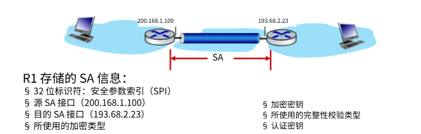
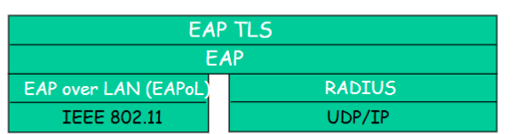

互联网计算-08计算机网络中的安全
总结：
- 基本原理
- 加密（对称和公开）
- 报文完整性
- 端节点的认证（鉴别）
- 在多种安全场景中使用
- 安全电子邮件
- 安全传输层（SSL）
- IP sec
- 802.11
- 运行中的安全性：firewalls & IDS
网络安全的概念
机密性 confidentiality：只有发送方和预定的接收方能理解传输的报文内容
- 发送方加密报文
- 接收方解密报文
认证 authentication：发送方和接收方需要确认对方的身份
报文完整性 message integrity：发送方、接收方需要确认报文在传输的过程中或者事后没有被改变
访问控制和服务的可用性 access and availability：服务可以接入以及对用户而言是可用的
著名的模型：
- Bob, Alice：需要安全的通信
- Trudy：可以截获，删除和增加报文
网络中的 bad guy 可以做什么：
- 窃听：截获报文
- 插入：在连接上插入报文
- 伪装：在分组的源地址上写伪装的地址
- 劫持：将发送方或者接收方踢出，接管连接
- 拒绝服务：阻止服务被其它正常用户使用
加密原理
加密语言：
: plaintext message
: ciphertext, encrypted with key
方法：
- 对称密钥密码学：发送方和接收方的密钥相同
- 公开密钥密码学：发送方使用接收方的公钥进行加密，接收方使用自己的私钥进行解密
对称密钥加密
——Bob 和 Alice 共享一个对称式的密钥
替换密码：将一个事情换成另一个
- 单码替换密码：将一个字母换成另一个字母
DES：Data Encryption Standard
- 56bit 对称密钥，64bit 明文输出
AES：Advanced Encryption Standard
- 数据 128bit 成组加密
公开密钥密码学
公开密钥加密算法：
- 需要 和 ，满足
- 给定一个公钥 不可能计算出私钥
RSA
背景知识：
-创建公钥私钥对
- 选择 2 个很大的质数 p, q
- 计算 n=pq, z=(p-1)(q-1)
- 选择一个 e（e<n），和 z 没有公因子，即互素
- 选择 d 使得 ed-1 正好被 z 整除，也就是 ed mod z = 1
- 公钥（n, e）私钥（n, d）
-加密解密
- 加密一个报文 m，计算
- 对接收到的 c 解密，计算
例：
-另一个重要的特性
-实际应用
- 指数运算让计算复杂度很高
- DES 比 RSA 至少快 100 倍
- 使用公钥加密技术建立安全连接，然后再建立第二个密钥——对称会话密钥 session key ——用于数据加密
认证 Authentication
报文完整性 message integrity
数字签名
类比手写签名
- 发送方数字签署了文件，前提是他是文件的拥有者/创建者
- 可验证性，不可伪造性，不可抵赖性
- 谁签署：接收方 Alice 可以向他人证明是 Bob，而不是其他人签署了这个文件（包括 Alice）
- 签署了什么：这份文件，而不是其他文件
- 简单对 m 的数字签名
- Bob 用自己的私钥对 m 进行签署，创建数字签名
- 假设 Alice 收到报文 m，以及数字签名
- Alice 用 Bob 的公钥 对 进行验证，判断 是否成立
- 如果成立，则签署这个文件的人一定有 Bob 的私钥
报文摘要
背景：对长报文进行公开密钥加密算法的实施需要耗费大量的时间
目标：固定长度，容易计算的 fingerprint
- 对 m 使用散列函数 H，获得固定长度的报文摘要 H (m)
散列函数的特性：
- 多对一
- 结果固定长度
- 给定一个报文摘要 x，反向计算出原报文在计算上是不可行的
Internet 检验和——弱的散列函数
- 拥有散列函数的特性
- 产生报文 m 的固定长度摘要
- 多对 1
- 但给定一个散列值，很容易计算出另一个报文具有同样的散列值
数字签名=对保卫摘要进行数字签署
可信赖中介
- 对称密钥问题：相互通信的实体如何分享对称式的密钥？
- trusted key distribution center KDC 在实体之间扮演可信赖中介的角色
- 公共密钥问题：当 Alice 获得 Bob 的公钥，她如何知道是 Bob 的 public key 而不是 Trudy 的？
- 可信赖的 certification authority
Public key Certification Authorities (CA)
CA：将每一个注册实体 E 和他的公钥捆绑
entity (person, website, router) 到 CA 注册它的公钥
- E 提供给 CA 自己的身份证据 proof of identity
- CA 创建一个证书，捆绑了实体信息和它的公钥
- certificate 包括了 E 的公钥，而且是被 CA 签署的（被 CA 用私钥加密）
当 Alice 需要拿到 Bob 的公钥时：
- 获得 Bob 的证书 certificate
- 对 Bob 的证书，使用 CA 的公钥来验证
安全电子邮件
Alice 需要发送机密的报文 m 给 Bob:
Alice:
- 产生随机的对称密钥
- 使用 对报文加密
- 对 使用 Bob 的公钥进行加密
- 发送 和 给 Bob
Bob:
- 使用自己的私钥解密
- 使用 解密 得到报文
Alice 需要提供源端的可认证性和报文完整性：
- Alice 数字签署文件
- 发送报文（明文）和数字签名
Alice 需要提供机密性，源端可认证性和报文完整性：
Alice 使用了 3 个 keys：自己的私钥，Bob 的公钥，新产生的对称式密钥
安全 TCP 连接：TLS
Transport-layer security (TLS)
提供
- 机密性：通过 symmetric encryption
- 完整性：通过 cryptographic hashing
- 可认证性：通过 public key cryptography
t-tls 需要什么：
- handshake
- key derivation
- data transfer
- connection closure
初始握手：
- Bob 与 Alice 建立 TCP 连接
- Bob 验证 Alice 是否真的是 Alice
- Bob 给 Alice 发送 MS，用来生成 TLS 对话中的所有其它 key

cryptographic keys:
考虑到使用相同的 key 对多种加密函数是不好的
- 对报文认证码 MAC 和加密使用不同的 key
4 种 keys:
- ：从 client 到 server 传输数据时用的 encryption key
- ：从 client 到 server 用的 MAC key
- ：从 server 到 client 传输数据时用的 encryption key
- ：从 server 到 client 用的 MAC key
用 KDF key derivation function 来产生 key
- 使用 master secret 和（可能有的）一下其它随机数据来产生新的 key
加密数据：
TCP 提供数据字节流的抽象
我们能否在写入 TCP 套接字时对流中的数据进行加密？
- MAC（报文鉴别编码）放在哪里？如果放在末尾，则在接收完所有数据并关闭连接之前无法验证消息完整性
- 解决方案：将流拆分为一系列“记录”
✓ 每个客户端到服务器的记录携带一个 MAC，使用 生成
✓ 接收方可以在每个记录到达时立即处理
- 解决方案：将流拆分为一系列“记录”
- t-tls 记录使用对称密钥 加密后传递给 TCP：
数据流可能遭受哪些攻击？
- 重排序攻击：中间人拦截 TCP 分段并重新排序（通过篡改未加密的 TCP 头部中的序列号）
- 重放攻击
解决方案：
- 使用 TLS 序列号（将数据和 TLS 序列号包含在 MAC 的计算中）
- 使用随机数（nonce）
关闭连接：
截断攻击：
- 攻击者伪造 TCP 连接关闭分段
- 导致一方或双方认为实际数据量比真实情况少
解决方案：使用记录类型标记，其中一种类型专用于关闭
- 类型 0 表示数据；类型 1 表示关闭
现在 MAC 的计算包含数据、类型和序列号：
网络层安全：IPsec
提供数据报级别的加密、认证、完整性
- 适用于用户流量和控制流量（例：BGP、DNS 消息）
两种模式：
2 个 IPsec 协议：
- 认证头部 Authentication Header (AH) 协议
- 提供可认证性和完整性，不提供私密性
- Encapsulation Security Protocal (ESP) 协议
- 提供可认证性、完整性、私密性
Security associations SAs
- 发送数据前，从发送方到接收方建立安全关联 SA
- 结束时，接收方维护关于 SA 的状态信息
- TCP 端点也维护状态信息
- IP 是无状态的，IPsec 是有连接的

IPsec datagram
隧道模式 ESP （图片中 ESP auth 不是 authenticated）
- ESP 尾部：分组密码的填充
- ESP 头部
- SPI，接收方知道如何处理
- 序列号，防止重放攻击
- ESP 认证字段中的 MAC 由共享密钥生成
ESP 隧道模式：操作
IPsec sequence numbers
对新的安全关联 SA，发送方将序列号初始化为 0
每次在 SA 上发送数据时：
- 发送方递增序列号计数器
- 将值放入序列号字段
目标：
- 防止攻击者窃听和重放数据包
- 收到重复的、经过认证的 IP 数据包可能会中断服务
方法：
- 目的地检查重复项
- 不跟踪所有接收到的数据包，而是使用窗口
IPsec security databases
IKE Internet Key Exchange
背景：
IKE: PSK & PKI
身份验证可以通过
- 预共享密钥 PSK
- PKI（公钥/密钥和证书）
PSK：双方从密钥开始
- 运行 IKE 来互相验证并生成 IPsec SA （每个方向一个），包括加密、认证密钥
PKI：双方均以公钥/私钥对和证书开始
- 运行 IKE 以相互认证，获取 IPsec SA（每个方向一个）
- 与 SSL 中握手类似
IKE 阶段
阶段 1：建立双向的 IKE SA
- 注意：IKE SA 不同于 IPsec SA
- 也成为 ISAKMP 安全关联
阶段 2：ISAKMP 用于安全协商 IPsec 的 SAs 对
阶段 1 有两种模式：激进模式和主模式
- 激进模式用更少的消息
- 主模式提供身份保护且更灵活
IPsec Summary
- 算法、密钥、SPI 编号的 IKE 消息交换
- AH 或 SEP 协议
- AH 提供完整性、源认证
- ESP 额外提供加密
- IPsec 对 可以是两个终端系统、两个路由器/防火墙，或一个路由器/防火墙和一个终端系统
无线和移动网络中的安全
802.11：认证、加密
到达的移动设备必须：
- 与接入点关联：通过无线链路的通信
- 认证到网络
(1) discovery of security capabilities
- AP 宣告其存在，提供的认证和加密方式
- 设备请求特定的认证方式，期望的加密方式
尽管设备和 AP 已经开始交换消息，但设备尚未通过认证，也没有加密密钥
(2) 相互认证和共享对称密钥生成
- AS 和移动设备已经共享了共同秘密（例如，密码）
- AS 和移动设备使用共享秘密、非对称（防止中继攻击）、密码散列（确保消息完整性）来相互认证
- AS 和移动设备推导出对称会话密钥
a. AS 生成随机数 ，发送给移动设备
b. 移动设备接收
- 生成
- 使用 ， 和初始共享密钥 生成对称共享对话密钥
- 发送 和 HMAC-signed value using 和初始共享密钥
c. AS 生成对称共享对话密钥
(3) 共享对称会话密钥分发（例，用于 AES 加密）
- 移动端和 AS 处生成相同的密钥
- AS 通知 AP 共享对称对话
(4) 通过 AP 在移动设备和远程主机之间进行加密通信

Extensive Authentication Protocal (EAP)：定义了移动设备与认证服务器 (AS) 之间的端到端请求/响应协议
4G LTE 中的认证、加密
a. 向归属网络 HSS 发送认证请求
- 移动设备发送 attach 消息（包含其 IMSI、访问网络信息），由 BS 中继到访问 MME，再传到归属 HSS
- IMSI 标识移动设备的归属网络
b. HSS 使用预先共享的密钥 K_HSS-M 来派生认证令牌 auth_token 和预期的认证响应令牌 xres_HSS
- auth*token 包含 HSS 使用 加密的信息，允许移动设备知道无论谁计算了 auth_token，都了解预先共享的密钥
- 移动设备已认证网络
- 访问过的 HSS 保留 供以后使用
c. 来自移动设备的认证响应
- 移动设备使用其密钥计算 ，进行与 HSS 相同的加密计算以计算 ，并将 发送给 MME
d. 移动设备通过网络进行认证
- MMS 比较移动计算出的 值与 HSS 计算出的 值。如果它们匹配，移动就通过认证了！
- MMS 通知 BS 移动已通过认证，为 BS 生成密钥
e. 移动设备、BS 确定用于在 4G 无线信道上加密数据和控制帧的密钥
- 可以使用 AES
从 4G 到 5G：
运营安全：防火墙和 IDS
防火墙
将组织内部网络和互联网隔离开来，按照规则允许某些分组通过（进出），或阻塞某些分组
用处：
- 防止拒绝服务攻击 Deny of Service DOS
- SYN flooding：攻击者建立许多伪造的 TCP 连接，对于真正用户而言已经没有资源留下了
- 阻止非法的修改/对非授权内容的访问
- 例如：攻击者替换掉 CIA 的主页
- 只允许认证的用户访问内部网络资源
- 认证用户/主机的集合
3 种类型的防火墙
- 网络级别：分组过滤器
- 有状态 & 无状态
- 应用级别：应用程序网关
无状态分组过滤器
内部网络通过配置防火墙的路由器连接到互联网上
路由器对分组逐个过滤，根据以下规则来决定转发还是丢弃
- 源 IP 地址，目的 IP 地址
- TCP/UDP 源，目的端口号
- ICMP 消息类型
- TCP SYN，ACK bits
示例 1：阻止 IP 协议字段为 17 且源端口或目的端口为 23 的入站和出站数据报
- 结果：所有入站和出站 UDP 流以及 Telnet 连接都被阻止
示例 2：阻止 ACK=0 的入站 TCP 段
- 结果：阻止外部客户端与内部客户端建立 TCP 连接，但允许内部客户端连接到外部
访问控制列表
ACL：规则的表格，top-bottom 应用到输入的分组 (action, condition) 对
有状态分组过滤
无状态分组过滤：heacy handed tool
- 允许那些“毫无意义”的数据包，例如目标端口为 80，ACK 位被设置，即使没有建立 TCP 连接
有状态分组过滤：跟踪每个 TCP 连接的状态
- 跟踪连接建立（SYN）、拆除（FIN）：确定传入、传出数据包是否合理
- 在防火墙超时非活动连接：不再允许数据包通过
ACL 增强以指示在允许数据包之前需要检查连接状态表
应用程序网关
根据应用数据的内容来过滤进出的数据报
例：允许部分内容用户 telnet 外部
- 要求所有 telnet 用户通过网关 telnet
- 对认证的用户而言，网关建立与目标主机的 telnet 连接，网关在两个连接上进行中继
- 路由器过滤器对所有不是来自网关的 telnet 的分组全部过滤掉
防火墙和网关的局限性
- IP spoofing：路由器无法确定数据是否真的来自声称的源
- 如果多个应用程序需要特殊处理，每个应用程序都有自己的应用程序网关
- 客户端软件必须知道如何联系网关
- 例如，必须在网络浏览器中设置代理的 IP 地址
- 过滤器通常对 UDP 使用全有或全无策略
- 折中：与外部通信的自由度，安全的级别
- 许多高度受保护的站点仍然遭受攻击
入侵检测系统 IDS
分组过滤
- 对 TCP/IP 头部进行检查
- 不检查会话间的相关性
IDS：intruction detection system
- 深入分组检查，检查分组的内容（例如，检查包中的字符字符串与已知病毒、攻击字符串的数据库进行比对）
- 检查分组间的相关性，判断是否是有害的分组
- 端口扫描
- 网络映射
- DoS 攻击
multiple IDSs：在不同的地点进行不同类型的检查